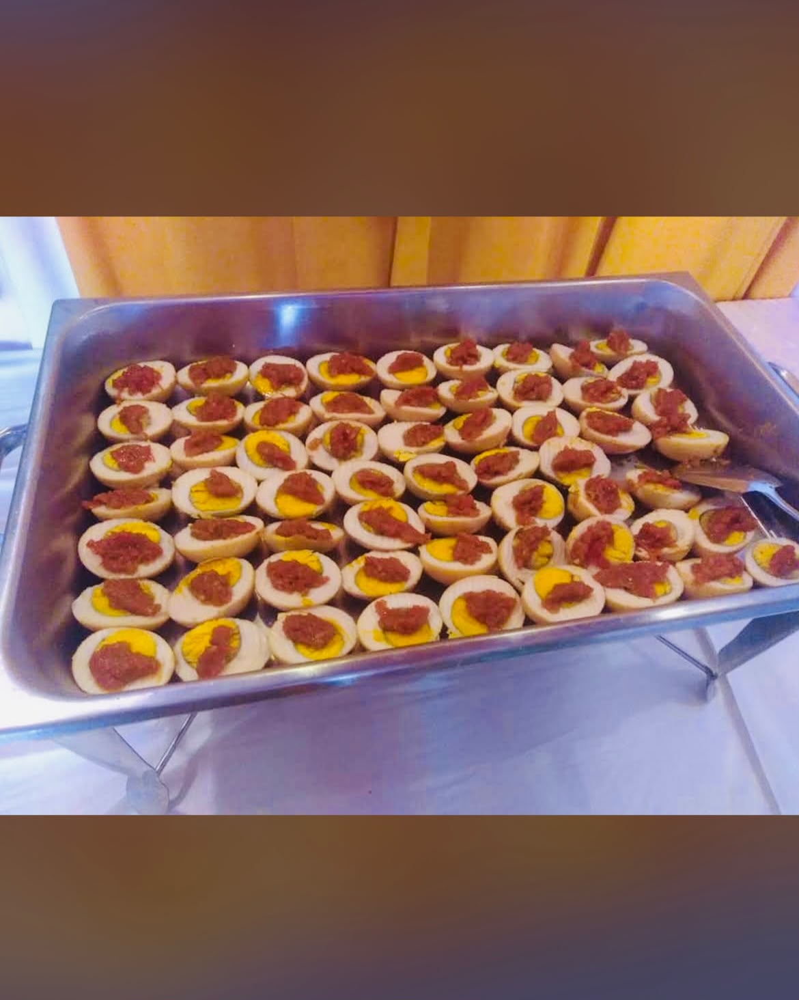
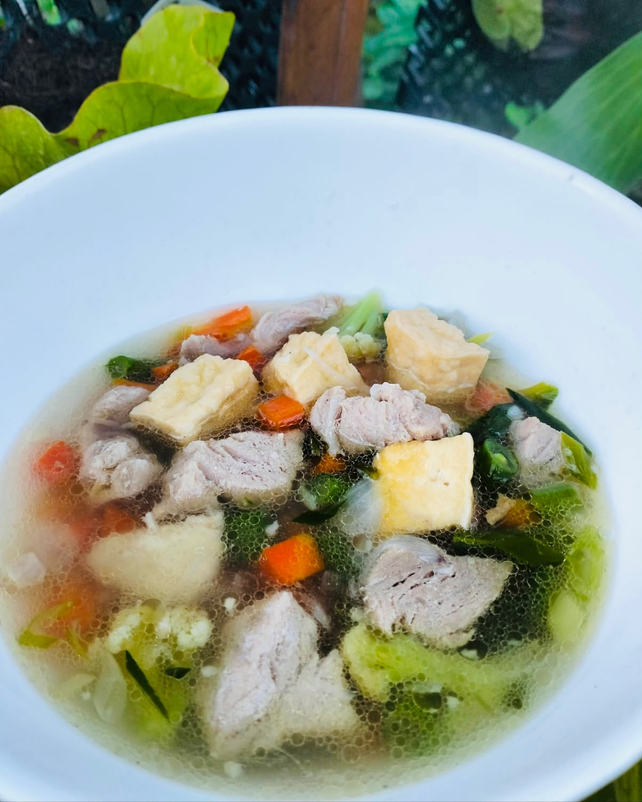

01 / UTAMA
Porsi Personal

Nasi Kotak
Sajian nasi kotak untuk rapat, seminar, kegiatan kantor, dan berbagai acara.
01 — Profil · Jasa Catering · Gianyar, Bali
Sabuh Mas Catering menyediakan layanan konsumsi untuk kegiatan masyarakat, acara keluarga, rapat, dan berbagai kegiatan instansi.
03 — KATALOG LAYANAN
Layanan konsumsi untuk kegiatan masyarakat, acara keluarga, serta rapat dan kegiatan instansi.
Sajian nasi kotak untuk rapat, seminar, kegiatan kantor, dan berbagai acara.

Layanan hidangan prasmanan untuk acara keluarga, pertemuan, dan berbagai kegiatan.

Layanan makanan tambahan untuk kegiatan balita dan program kesehatan masyarakat.

Paket kudapan untuk rapat, seminar, pelatihan, dan berbagai kegiatan.
Detail menu dan harga dapat dikonfirmasi langsung kepada pemilik usaha saat pemesanan.
Sabuh Mas Catering mulai berjalan sekitar 2018 di Gianyar, Bali.
Menurut keterangan pemilik dalam wawancara, usaha ini berawal dari pesanan konsumsi keluarga, kemudian melayani kebutuhan Puskesmas, kampus, dan instansi pemerintah.
04 — PEMESANAN DAN KONTAK
Informasi pemesanan untuk masyarakat umum, keluarga, instansi, dan lembaga pemerintah.
Informasi pemesanan untuk masyarakat umum dan keluarga melalui WhatsApp.
Informasi layanan pengadaan konsumsi untuk instansi dan lembaga pemerintah.